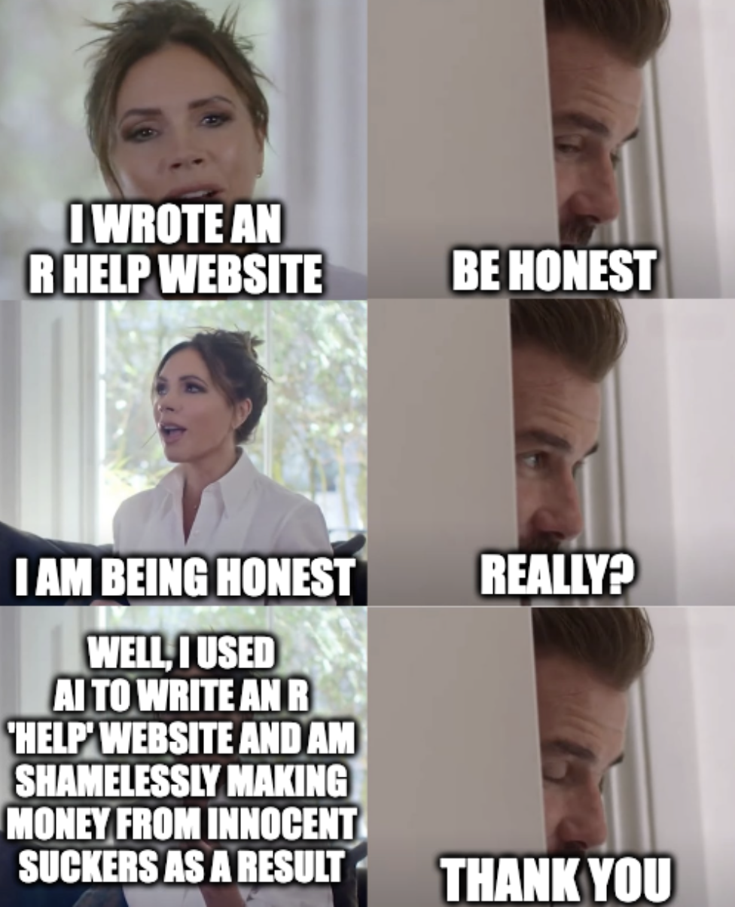

tl;dr
The rise of R ‘help’ websites written by AI is predatory and shameless. Things will only get worse.
Help
Regular readers know this for sure: I’m not an R expert. I don’t just ‘know’ stuff. I’m DuckGoGoing ‘how to do x in r’ every 10 minutes.
In doing this, I’ve noticed a trend that I want to complain about: I’ve found a few suspicious ‘help websites’ for R appearing high up the search rankings.
Why ‘suspicious’? They’re clearly written with an AI tool. And they’re garbage. In content and ethics.
I’m absolutely not going to name websites here because I do not want to send any traffic there.
Taking you for a sucker
Here’s where they excel. They:
Gullibility
You might be thinking ‘okay, but maybe this is an efficient way of helping people’. To which the obvious retort is ‘okay, no, this is an efficient way to make money by exploiting the clicks of vulnerable learners’.
How? At least one of these sites suggests it has ‘partners’, which are clearly just affiliate links. They will make a commission if their visitors sign up for a course at the affiliate link. The site’s KPI is conversions, not ‘people helped’.
Brazenness
These sites seem to have tens (hundreds?) of help pages published on the same day without any attribution to a particular human. Either they have some very efficient staff or they assume no-one will check.
One website includes a ‘package guide’ for every package on CRAN. Wow! But you guessed it: these pages exist only to pad out the site. In this case, each of the 20,000 ‘guides’ was the same AI-generated content, but with the name of the package changed each time. Of course, there are affiliate links at the bottom of each one.
Perhaps most brazen is the poor attention to detail. At least one of these sites retains the sentence:
Certainly! Here are the two sections for adding and to your webpage:
Clearly someone has asked a chatbot for some text and it has obliged. And then they forgot to delete this telltale line from the output before pasting it into their website, lol.
SEO
In some cases I found links to these sites as the top search result for fairly generic R queries.
As is well known, people will just click the top links willy-nilly. There’s an expectation that these must be the best sites if they’re top of the search rankings, right?
But no. Google is gameable as heck and easily manipulated for clicks.
These sites haven’t ‘earned’ their ranking by producing high-quality advice. They’re not there because other people are linking to them as a mark of endorsement.
Why this sucks
I mean it’s kind of obvious that this garbage is harmful, but for the benefit of the doubt, my concerns are as follows.
- Who are they stealing from?
- How much of the code is hallucinatory?
- Is this ruining learners’ understanding?
It’s pretty common knowledge that many AIs are trained on data without the consent of original creators. How much content on these pages is stolen from people without their consent? Maybe it slurped up some of your material against your will.
These sites have code where the examples literally cannot be run; the syntax cannot be evaluated if copy-pasted into an R terminal. At least one of these sites was offering advice for {ggplot2} without ever showing an example plot.
I’m pretty seasoned at searching for things on the internet, particularly R. I can separate the wheat from the chaff, I reckon. But not everyone can. How can a beginner user know what’s wrong if they copy and paste trash from a shameless website like this?
Suck it up
Bottom line: this is scummy.
I’m asking that you take two seconds to think ‘could this be a fake help website?’ Consider the telltale signs:
- suspicious wording and accidentally-undeleted verbiage copied from the output of an LLM (large language model) query
- obvious links to affiliate sites
- code that doesn’t run when you copy it to your machine
- examples of code, but no output
- crappy Corporate-Memphis-style AI-generated images of a generic white-guy in his 30s at a computer who is probably called Matt
Maybe I don’t need to warn you about this. It’s 2024. Times have changed. You’re smart. I grew up with floppies and CD ROMs.
Don’t patronise these sites by clicking affiliate links; patronise them with condescension. It’s all we can do.
Environment
Session info
Last rendered: 2024-03-16 08:24:09 GMT
R version 4.3.1 (2023-06-16)
Platform: aarch64-apple-darwin20 (64-bit)
Running under: macOS Ventura 13.2.1
Matrix products: default
BLAS: /Library/Frameworks/R.framework/Versions/4.3-arm64/Resources/lib/libRblas.0.dylib
LAPACK: /Library/Frameworks/R.framework/Versions/4.3-arm64/Resources/lib/libRlapack.dylib; LAPACK version 3.11.0
locale:
[1] en_US.UTF-8/en_US.UTF-8/en_US.UTF-8/C/en_US.UTF-8/en_US.UTF-8
time zone: Europe/London
tzcode source: internal
attached base packages:
[1] stats graphics grDevices utils datasets methods base
loaded via a namespace (and not attached):
[1] htmlwidgets_1.6.2 compiler_4.3.1 fastmap_1.1.1 cli_3.6.2
[5] tools_4.3.1 htmltools_0.5.6.1 rstudioapi_0.15.0 yaml_2.3.8
[9] rmarkdown_2.25 knitr_1.45 jsonlite_1.8.7 xfun_0.41
[13] digest_0.6.33 rlang_1.1.3 evaluate_0.23